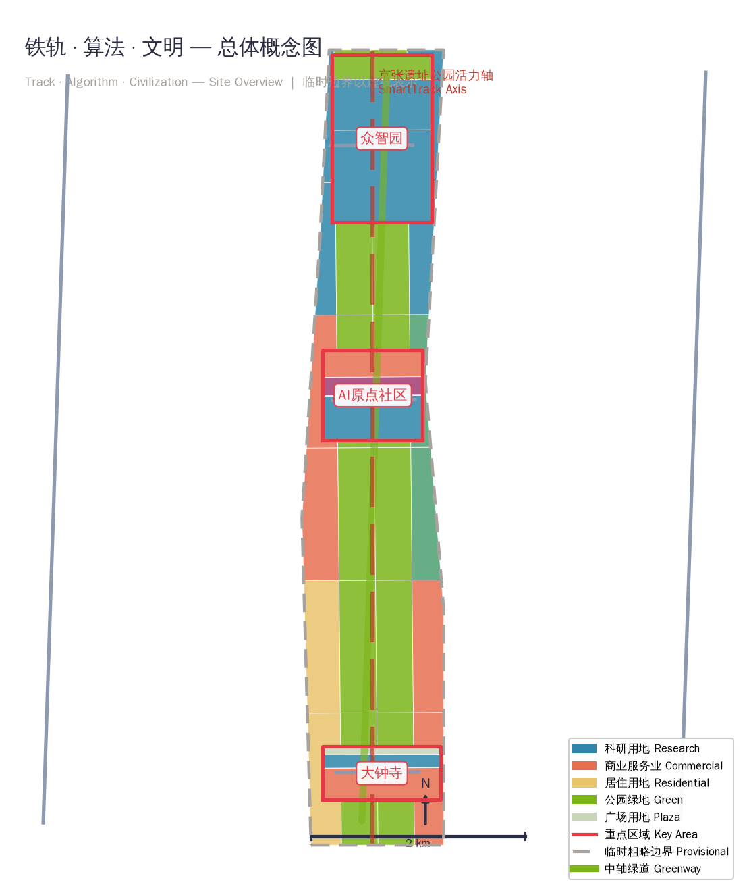
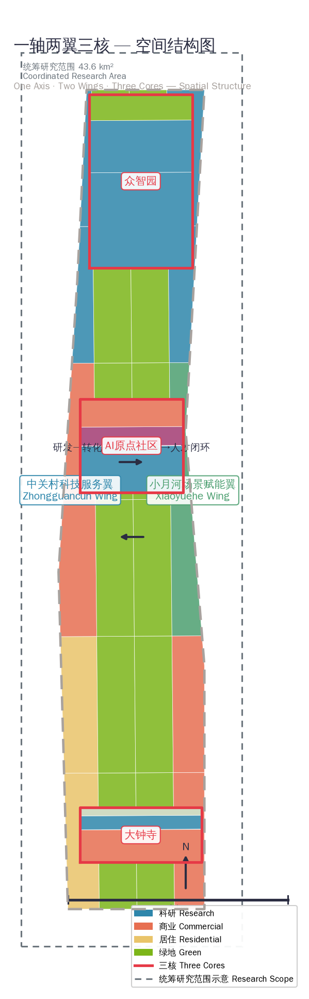
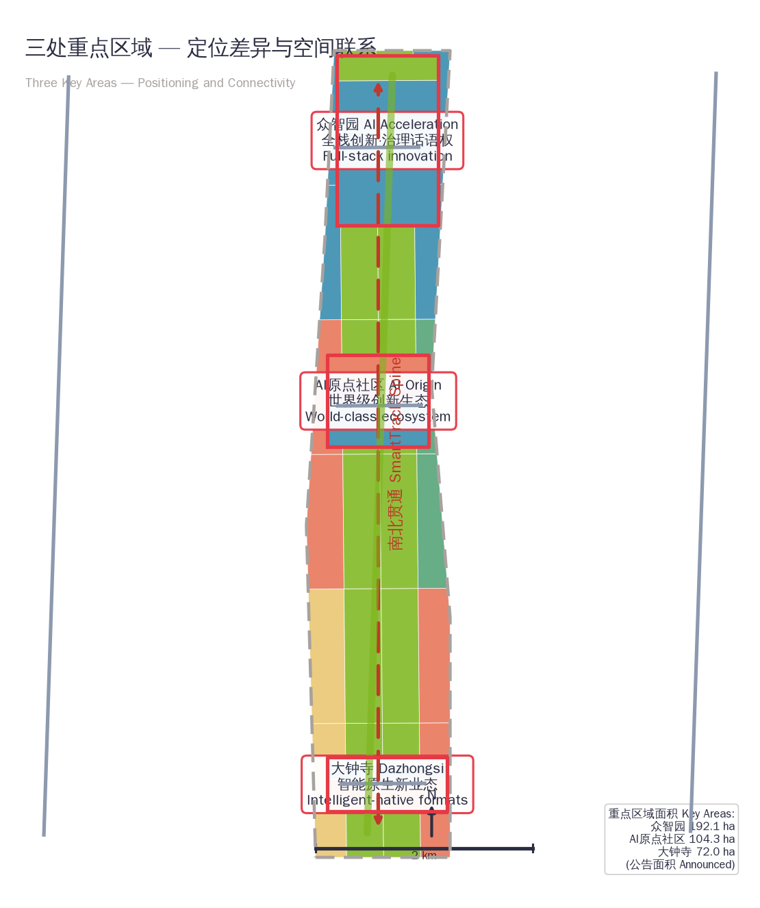
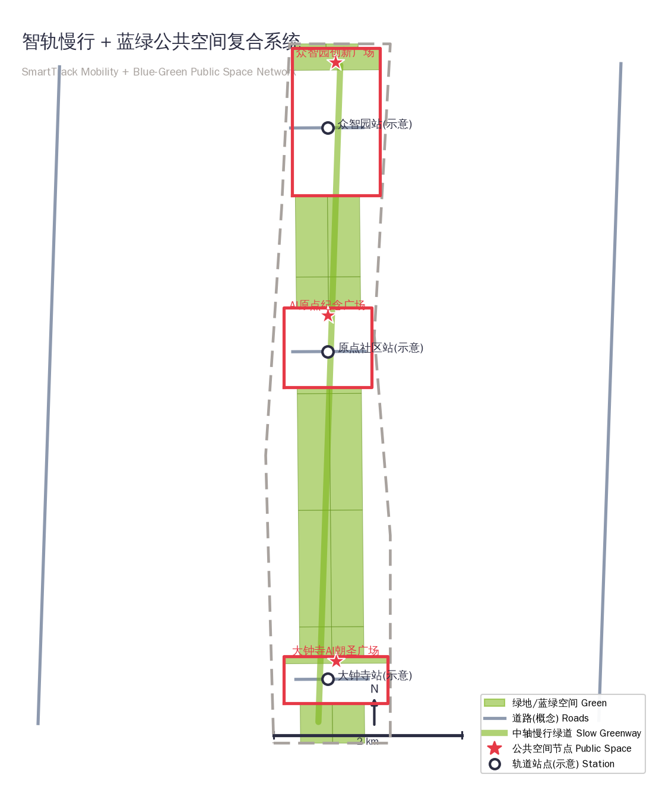
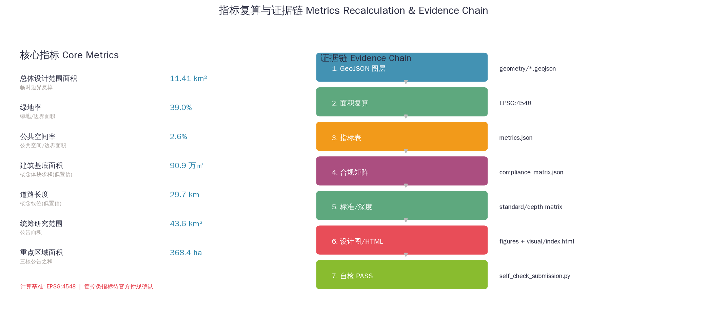

Centennial Jing-Zhang AI Innovation Belt: Track · Algorithm · Civilization
A complete AI innovation belt concept proposal built on the centennial Jing-Zhang Railway heritage: one axis, two wings, three cores, five functions, and six agent tasks, with bilingual narrative, 9 GeoJSON layers, matrix evidence chains, and offline visualization.
Centennial Jing-Zhang AI Innovation Belt: Track · Algorithm · Civilization
Concept Statement: This proposal is a conceptual, forward-looking, branding-oriented and operational deliverable for the agent open call. All spatial implementation suggestions are "concept proposals", "reference schemes", or "material for professional teams to deepen"; they do not replace formal planning and do not constitute government-approved conclusions 来源 [assumption:A-DESIGN-001].
Design Basis and Source List
This formal proposal takes the "Centennial Jing-Zhang AI Innovation Belt Urban Design International Proposal Solicitation Qualification Pre-Announcement" issued by the Beijing Municipal Commission of Planning and Natural Resources as its primary basis 来源, and the maintainer-registered provisional rough boundaries, key areas, enums, indicators, standards, and source lists in brief/site-package/ as machine-readable basis 来源. The proposal also follows the agent open call taskbook 来源, using "three positionings, five functions, three areas and two wings, six tasks" as the content framework.
Every design judgment is decomposed into traceable sources, recomputable metrics, verifiable layers, and human-reviewable assumptions. The narrative keeps only 1-3 evidence anchors directly adjacent to each judgment; complete machine indexes are stored in sources.json, metrics.json, compliance_matrix.json, standard_matrix.json, and design_depth_matrix.json 来源.
Data boundary: The boundaries used in this proposal are the provisional rough boundaries (provisional_constraint, official_boundary=false, boundary_precision="provisional_rough") from brief/site-package/geometry/provisional_boundaries.geojson, used only for proposal generation, display, self-check, and design discussion. They must not be treated as official redlines, approval bases, or precise area recalculation bases 空间数据 指标. This organizer-side data gap alone does not block content scoring; once official polygons are provided, all design layers and metrics must be recalculated [assumption:A-BOUNDARY-001].

Three-Level Scope Framework
The proposal organizes work across the three levels defined in the announcement 深度:
| Level | Scope | Area | Design Task | Data Anchor |
|---|---|---|---|---|
| Coordinated Research Area | N. 5th Ring Rd—Jingzang Expwy—Xizhimen Outer St—Wanquanhe Rd | 43.6 km² | AI industry ecosystem, future city form, three-areas-two-wings synergy | 指标 |
| Overall Design Area | 1-2 km around Jing-Zhang Heritage Park | 11.4 km² | Urban renewal, land use, transport/municipal, urban character | 空间数据 指标 |
| Key Detailed Design Area | Three key districts | 368.4 ha | Detailed design, scenario implementation, renewal projects | 空间数据 指标 |
The three levels are not separate drawing sets: the coordinated research level decides industry chain and city-form judgments; the overall design level translates judgments into renewal projects, spatial structure, and facility capacity; the key-area level verifies implementability of parcels, buildings, transport, public space, and AI application scenarios 深度 深度.

Coordinated Research Area: Industry and Future City Research
Overall Concept and Naming System
The proposal advances the overall concept "Track · Algorithm · Civilization" (铁轨·算法·文明), abbreviated JZ-AI Belt. The naming logic: the Jing-Zhang Railway was the first trunk railway independently designed and built by Chinese engineers—the historical origin of "self-reliant innovation"; the AI innovation belt is the new origin of contemporary self-reliant innovation. The track symbolizes linear connectivity and engineering autonomy, the algorithm symbolizes the universal language of the intelligent age, and civilization symbolizes the evolution from transport civilization to intelligent civilization 来源.
Naming system (three tiers):
- Primary name: Centennial Jing-Zhang AI Innovation Belt / JZ-AI Innovation Belt
- Sub-brands: One Belt (Jing-Zhang Intelligent Corridor), Three Cores (Zhongzhiyuan · AI Origin · Dazhongsi), Two Wings (Zhongguancun Technology Service Wing · Xiaoyuehe Scenario Empowerment Wing)
- Scenario brands: SmartTrack public experience line, Origin Market, Z-AI Foundry, Dazhongsi AI Lounge
Logo/visual identity direction: The core graphic combines railway sleepers and circuit traces into a "JZ" letterform; three parallel lines represent the railway, data flow, and innovation belt. Standard colors: Jing-Zhang railway rust red (heritage) + Haidian technology blue (contemporary) + AI electric cyan (future). The visual system extends to signage, street name signs, scenario cards, event key visuals, and international communication posters 标准.
Three Positionings and Five Functions
The proposal maps the taskbook's three positionings: Centennial Jing-Zhang Culture Belt, Urban AI Life Experience Belt, AI Convergence Innovation Belt; and five functions: AI full-stack self-reliant innovation system, world-class AI innovation ecosystem, AI+ scenario empowerment paradigm, intelligent AI vibrant city, global AI governance discourse 来源.
Three-areas-two-wings synergy loop: The three cores (Zhongzhiyuan = full-stack self-reliant innovation and governance discourse; AI Origin Community = world-class innovation ecosystem; Dazhongsi = intelligent-native new business formats) act as the primary innovation engine; the two wings (Zhongguancun Technology Service Wing = global factor allocation, IP and capital empowerment; Xiaoyuehe Scenario Empowerment Wing = scenario opening and vibrant-city experimentation) form the supporting loop, closing the "R&D—transformation—scenario—capital—talent" cycle 深度.
Global AI Innovation Ecosystem Cases (8)
| # | Case | Region | Transferable Mechanism |
|---|---|---|---|
| 1 | Sand Hill Road, Silicon Valley | USA | Capital agglomeration co-located with startup community; venture capital walkability |
| 2 | King's Cross Knowledge Quarter, London | UK | Railway heritage + knowledge economy regeneration; mixed-use station district |
| 3 | one-north, Singapore | Singapore | Government-led ecosystem + full-chain incubation; park-like industry campus |
| 4 | Kendall Square, Boston | USA | University-industry-capital triple helix; open blocks and ground-floor innovation |
| 5 | Silicon Wadi, Tel Aviv | Israel | Civil-military fusion + startup culture; compact high-density innovation blocks |
| 6 | Hangzhou Future Sci-Tech City | China | Platform-company-driven + city-level scenario opening; industry-city-talent integration |
| 7 | Nanshan Sci-Tech Park, Shenzhen | China | Hardware innovation ecosystem + fast iteration; small flexible workshop retrofit |
| 8 | Technopark Zurich | Switzerland | High-quality living environment attracts talent; lakeside green innovation corridor |
Transferable takeaways: walkable capital-talent interfaces, railway/station heritage regeneration, park-like industrial environments, small flexible space supply, platform-level scenario opening 标准 深度.
Future City Form
AI will reshape work, living, socializing, learning, transport, and public services. The proposal anchors the future city form as: AI+ transport (SmartTrack feeder, unmanned logistics, slow-traffic priority), continuous green space (blue-green network with the Jing-Zhang Heritage Park as spine), innovation service facilities (shared compute, testing grounds, release halls), and international living-working atmosphere (24-hour innovation blocks) 深度 指标. These judgments anchor to land use, public space, slow-traffic networks, AI scenario nodes, metrics, and drawings 空间数据.
Overall Design Area: Urban Renewal and Regulatory-Plan-Level Urban Design
The overall design area reaches regulatory-plan-level urban design depth, forming a "one axis, two wings, three cores, blue-green slow-traffic composite loop" spatial structure 深度:
- One Axis: Jing-Zhang Heritage Park Vitality Axis—a north-south railway heritage green corridor linking the three cores, carrying slow traffic, cultural display, and AI public experience 空间数据
- Two Wings: West Zhongguancun Technology Service Wing (research + capital + IP services); East Xiaoyuehe Scenario Empowerment Wing (education + scenario experience + quality living) 空间数据
- Three Cores: Zhongzhiyuan, AI Origin Community, and Dazhongsi key districts 空间数据
- Composite Loop: daily activity network of slow-traffic greenways, public space nodes, and transit station interchanges 空间数据
Land use forms 33 complete, closed, gap-free, overlap-free functional zones (research/commercial/residential/cultural/educational/green/plaza), fully covering the 11.4 km² design boundary 深度 空间数据. Building proposals use conceptual massing to express renewal and new-build directions 深度 深度; all intensity judgments (FAR, height, density, setback) are listed as pending official regulatory confirmation [assumption:A-CONTROLS-001] [assumption:A-BUILDINGS-001].
Transport proposals provide conceptual alignments for station integration, road micro-circulation, slow-traffic gap stitching, and parking organization 深度 空间数据; municipal and new infrastructure (distributed energy, edge compute, innovation service platforms) are written as prototypes to be deepened, without engineering commitments [assumption:A-ROADS-001].
Detailed Design of Key Areas
The three key areas reach the urban design depth of a comprehensive implementation plan 深度, each forming a readable mini-scheme of "positioning + spatial structure + building renewal + transport/slow traffic + public space + AI scenarios + implementation risks" 空间数据.

Zhongzhiyuan AI Acceleration Area (approx. 192.1 ha) 空间数据
- Positioning: Garden-style full-stack self-reliant innovation district; carrier of AI governance global discourse
- Spatial moves: Strengthen the Qinghe riverfront, organize industry display, low-carbon innovation exchange, and external transport; use green space to host open testing and standards governance display 空间数据
- AI scenarios: Full-stack model testing and validation ground (industry test), standards workshop, safety governance exhibition hall, low-carbon compute experience center
- Implementation risks: River blue line, ecological and flood-control conditions pending professional confirmation
Beijing AI Origin Community (approx. 104.3 ha) 空间数据
- Positioning: Near-campus transformation and talent zone; origin of the world-class AI innovation ecosystem
- Spatial moves: Stitch campus-park-block slow-traffic links; add result release, talent services, residential living, and open-source collaboration space 空间数据
- AI scenarios: Open-source community release hall (scenario), near-campus transformation street (industry test), talent zone service points, AI education experience points
- Implementation risks: Campus boundaries, ownership, and ground-floor uses pending confirmation
Dazhongsi AI Industry Cluster (approx. 72.0 ha) 空间数据
- Positioning: Urban intelligent economy and international exchange district; engine of intelligent-native new business formats
- Spatial moves: Station-area integration around Dazhongsi station, four-quadrant pedestrian connectivity, commercial services, and public environment renewal around anchor enterprises 空间数据
- AI scenarios: Agent and intelligent terminal showroom, content consumption experience hall, data-element lounge, international roadshow lounge
- Implementation risks: Transit station, road intersection, and municipal pipeline conditions pending confirmation
AI Innovation Ecosystem, Personas, and AI+ Scenarios
5 User Personas
| Persona | Typical Needs | Spatial Response | Privacy Boundary |
|---|---|---|---|
| Open-source developer | Release, collaborate, test, community reputation | Origin Community open-source hall, public code wall, night collaboration space | No personal behavior tracking; aggregate activity statistics only |
| Startup team | Low-cost office, compute access, product testbed | Zhongzhiyuan shared test ground, edge compute service points | Compute and data services require separate authorization |
| Headquartered enterprise visitor | Display, business, international reception, recruiting | Dazhongsi international roadshow lounge, transit interchange | Enterprise logos and cases must be rights-cleared |
| Local resident | Commute, leisure, community services, low-disruption renewal | Jing-Zhang Heritage Park slow-traffic loop, embedded community services | No resident profiling for commercial recommendation |
| University faculty and students | Transformation, cross-campus collaboration, daily slow traffic | Campus-park slow-traffic stitching, transformation stations, AI education experience points | Campus data and research results require authorization |
12 AI Scenario Cards (including 4 industry test/validation scenarios)
| # | Scenario Card | Spatial Carrier | Type | Data/Privacy/Review Boundary |
|---|---|---|---|---|
| 01 | Full-stack model testing and validation ground | Zhongzhiyuan | Industry test | Test data anonymized; human compliance review |
| 02 | Standards workshop | Zhongzhiyuan | Industry service | Meeting content non-public; authorized distribution |
| 03 | Safety governance sandbox | Zhongzhiyuan | Industry test | Isolated red-team environment; regulatory review |
| 04 | Edge compute station | Overall area nodes | New infrastructure | Minimal service data; auditable logs |
| 05 | Open-source release hall | AI Origin Community | Public experience | Open code; aggregate contributor display |
| 06 | Near-campus transformation street | AI Origin Community | Industry test | Research data authorized; IP services |
| 07 | Dazhongsi international roadshow lounge | Dazhongsi | Industry service | Business info authorized; media rights-cleared |
| 08 | Data-element lounge | Dazhongsi | Industry service | Compliant authorization, auditable; no personal privacy |
| 09 | AI life-service model street | Community-commerce interface | Public experience | Minimal resident data; human review |
| 10 | AI slow-traffic navigation | Jing-Zhang Heritage Park axis | Public experience | Low-intrusion sensing; explainable signage |
| 11 | Qinghe low-carbon innovation corridor | Zhongzhiyuan riverfront | Public experience | Public environmental data; graded events |
| 12 | Global AI event week route | Belt-wide public space system | Public experience | Graded event safety; rights-cleared media |
Scenario-space-operation mapping: Each scenario card maps to a concrete spatial carrier (layer feature), service persona, data boundary, human review mechanism, suggested operator, and visualization layer; the full mapping enters compliance_matrix.json and visual/index.html 深度 深度. All AI governance suggestions follow data-minimization, open-source, explainability, and human-review principles; they do not replace planning approval and do not output unauthorized personal profiles 标准.

Land Use, Building Scale, and Retain-Renovate-Demolish Strategy
Land use follows national land-use classification standards, forming complete, closed, gap-free zoning 深度 空间数据:
| Land Use Type | Code | Functional Role |
|---|---|---|
| Research land | 0802 | Zhongzhiyuan full-stack R&D, Origin ecosystem, Dazhongsi incubation |
| Commercial services land | 05 | Technology services, intelligent consumption, maker living |
| Residential land | 0701 | Talent communities, quality living communities |
| Cultural land | 0803 | Origin memorial clusters, cultural display |
| Educational land | 0804 | University-linked innovation blocks |
| Park/plaza land | 1401/1403 | Jing-Zhang Heritage Park vitality axis, three public plazas |
Building proposals distinguish retain, renovate, renew, and new-build directions with conceptual massing 深度 空间数据. Building footprint area (approx. 908,800 m²) and green ratio (approx. 39%) are recalculated in metrics.json 指标 指标. Retain-renovate-demolish classification is directional; parcel-level conclusions await ownership, regulatory, and engineering confirmation [assumption:A-CONTROLS-001].
Transport, Rail, Municipal Infrastructure, and Public Services
- Rail integration: Station-city integration concept proposals around Dazhongsi, Wudaokou, and Qinghua East Road West stations 深度
- Road micro-circulation: Two north-south arterials (conceptual) + three east-west connectors, stitching major slow-traffic gaps 空间数据
- Slow traffic: Central slow-traffic greenway (Jing-Zhang Heritage Park vitality axis) linking the three cores as the "SmartTrack" public experience line 空间数据
- Municipal & new infrastructure: Distributed energy, edge compute, innovation service platforms as prototypes to be deepened [assumption:A-ROADS-001]
All road alignments are conceptual, not road redlines or engineering alignments; municipal capacity, energy load, and bridge/tunnel engineering assessments are listed as prerequisites for formal deepening 指标.
Blue-Green Network, Public Space, and Urban Character
Blue-Green Network
With the Jing-Zhang Heritage Park vitality axis as the spine 空间数据, the proposal coordinates Qinghe, Xiaoyuehe, and the mobility needs of universities, enterprises, and communities, forming north-south through and east-west connected walking and cycling systems; green ratio approx. 39% and public space ratio approx. 2.6% are recalculated in metrics.json 指标 指标.
Public Space and AI Pilgrimage Landmarks (4)
| # | Landmark | Location | Design Description |
|---|---|---|---|
| 1 | SmartTrack Origin Monument | AI Origin Community | Memorial and honor-display node at the intersection of Qinghuayuan station history and AI open-source culture 空间数据 |
| 2 | Algorithm Light Dome | Zhongzhiyuan | Pilgrimage-style public space displaying full-stack innovation outcomes, standards, and governance 空间数据 |
| 3 | Track-Future Digital Art Bridge | Dazhongsi | Walking landmark where Jing-Zhang railway heritage meets AI digital art 空间数据 |
| 4 | Contributor Honor Wall | Belt-wide public space system | Traceable, sustainable display of agent and human contributor names (taskbook "memorable contribution" principle) 来源 |
Urban Character
The proposal fuses three characters—Jing-Zhang railway heritage, Zhongguancun innovation culture, and AI new culture 深度: rust red (heritage), technology blue (contemporary), and electric cyan (future) run through building frontages, street furniture, signage, and public art; all brands, fonts, images, and portraits require rights-cleared sources 标准.
Renewal Projects, Implementation Policy, and Phasing
Renewal Project List
| No. | Project | Type | Key Dependencies | Evidence |
|---|---|---|---|---|
| JZ-01 | Jing-Zhang Heritage Park slow-traffic gap stitching | Public space/transport | Road redlines, under-bridge space, traffic organization review | 空间数据 |
| JZ-02 | Zhongzhiyuan Qinghe innovation frontage | Blue-green/industry display | River blue line, ecology, flood control | 空间数据 |
| JZ-03 | Origin near-campus transformation street | Urban renewal/industry services | Campus boundaries, ownership, ground-floor uses | 空间数据 |
| JZ-04 | Dazhongsi station four-quadrant connectivity | Rail integration/slow traffic | Transit station, intersections, municipal pipelines | 空间数据 |
| JZ-05 | AI public services and edge compute nodes | New infrastructure/public services | Energy, compute, safety, operator | 空间数据 |
| JZ-06 | Global AI event week public route | Operations/brand | Public space permits, event safety, rights clearing | 空间数据 |
Phasing 深度 空间数据
- Near term (P1, 2026-2028): Zhongzhiyuan innovation zone launch in the north—testing/validation ground, standards workshop, Qinghe frontage, safety governance sandbox pilots
- Mid term (P2, 2028-2031): Origin community renewal in the center—open-source hall, transformation street, talent services, slow-traffic stitching
- Long term (P3, 2031-2035): Dazhongsi vitality upgrade in the south—intelligent consumption, data-element lounge, international roadshow lounge
Annual Event System and Long-Term Operations 来源
- Annual event brands: SmartTrack Week (spring and autumn) + Origin Market (monthly) + Zhongzhi Open Day (quarterly)
- Developer community operations: open-source collaboration, contributor honor system, hackathons, and standards workshops
- Scenario open operations: each "scenario card" as a minimal operating unit, with clear opening targets, frequency, responsibilities, and conversion paths
- International communication and attraction conversion: the SmartTrack public experience line as the first stop for international visitors, converting "experience→discussion→landing" through roadshow lounges
- All events are concept proposals, not confirmed government arrangements; conversion mechanisms are operational designs, not investment commitments [assumption:A-DESIGN-001]
Metrics, Area Recalculation, and Compliance Matrix
Core metrics are recalculated in EPSG:4548 directly from submitted geometry 深度:
| Metric | Value | Notes |
|---|---|---|
| Overall design area | 11,412,825 m² | Recalculated from provisional boundary 指标 |
| Green space area | 4,447,346 m² | Sum of green layer 指标 |
| Public space area | 300,621 m² | Sum of public space layer 指标 |
| Building footprint area | 908,840 m² | Conceptual massing sum (low confidence) 指标 |
| Road length | 29,706 m | Conceptual alignment sum (low confidence) 指标 |
| Green ratio | 39.0% | green/area 指标 |
| Public space ratio | 2.6% | public/area 指标 |
| Coordinated research area | 43,600,000 m² | Announced area 指标 |
Regulatory indicators (FAR, building height, density, setback, road redline) are listed as pending confirmation [assumption:A-CONTROLS-001]; performance indicators (AI innovation index, talent density, event participation) are operation-calibration metrics, not approval conclusions.
The compliance matrix covers all mandatory tasks in announcement sections 1.3, 1.4, 1.5 and agent tasks 1-6, mapping each to sections, layers, metrics, drawings, HTML pages, sources, assumptions, and self-checks 来源 标准.

Risk, Copyright, and Compliance
Data risks: Official boundaries, key-area polygons, regulatory conditions, road redlines, ownership, municipal, and heritage data are missing; they are recorded in assumptions.json and self-check; all layers and metrics must be recalculated once official data is available 空间数据.
Language contract: This is the Chinese primary draft with an equivalent English translation proposal.en.md; A3/A0, HTML, and text-bearing figures all provide Chinese/English language counterparts following the competition glossary 来源.
Copyright compliance: All images, drawings, icons, data, and code assets are described with source, license, and authorization status in sources.json and report/copyright_statement.md; no unauthorized fonts, trademarks, portraits, or copyrighted materials are used.
Concept boundary: This proposal does not claim official approval, approved regulatory plans, final land ownership, final construction scale, or guaranteed implementation; all spatial implementation suggestions are "concept proposals/reference schemes/material for professional teams to deepen", and final judgment rests with humans and professional teams [assumption:A-DESIGN-001].
References
brief/site-package/design_brief.json,agent_taskbook.json,geometry/provisional_boundaries.geojson,standards/standards.jsondata/source_registry.json,docs/terminology-glossary.md,docs/formal-submission-guide.md- Complete machine indexes:
sources.json,metrics.json,compliance_matrix.json,standard_matrix.json,design_depth_matrix.json - Official announcement: https://ghzrzyw.beijing.gov.cn/zhengwuxinxi/tzgg/hd/202605/t20260509_4643047.html 来源